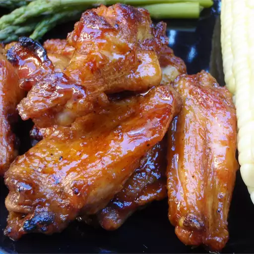

Detroit Hot Honey Wings

Description
These honey wings are sweet and spicy and amazing on the grill. This is a Detroit recipe, so enjoy!
Ingredients
- 2 pounds chicken wings, tips discarded
- 1 teaspoon cayenne pepper (add more if you can stand it)
- salt and ground black pepper to taste
- 1 cup honey, divided
- ½ cup butter, melted
- ½ cup hot sauce
Steps
- Preheat an outdoor grill to medium heat and lightly oil the grate.
- Wash wings well and pat dry with paper towels. Season wings with cayenne, salt, and pepper.
- Cook chicken wings on the preheated grill, brushing wings liberally with 1/2 cup honey while cooking, until cooked through and juices run clear, 20 to 30 minutes.
- Pour melted butter into a large bowl; mix in hot sauce and remaining 1/2 cup honey.
- Remove wings from the grill and immediately toss them in hot honey butter sauce to coat. Serve wings wet or return them to the grill for 1 minute per side to set sauce.
Back to home page